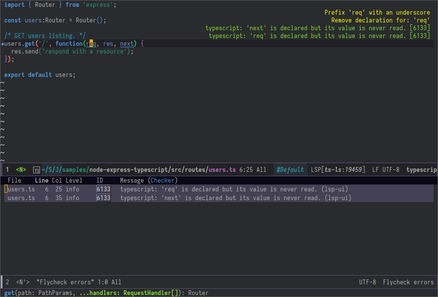
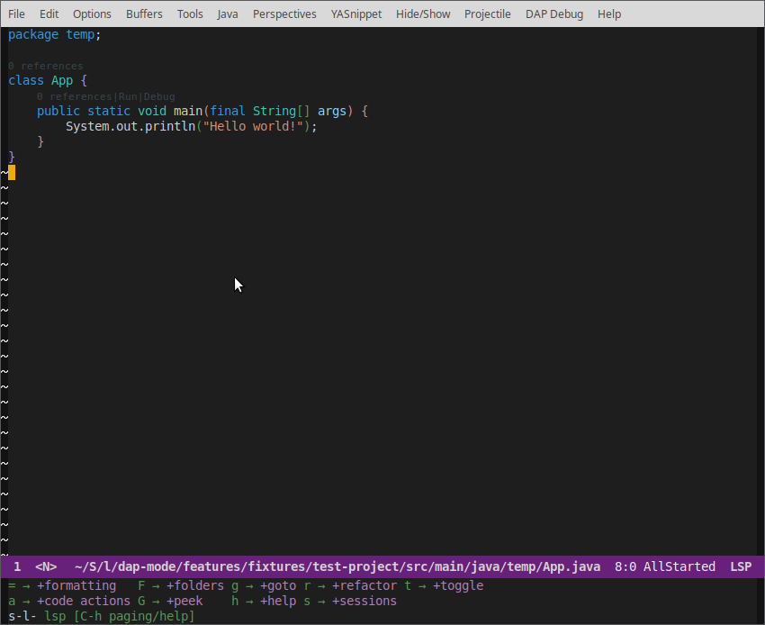
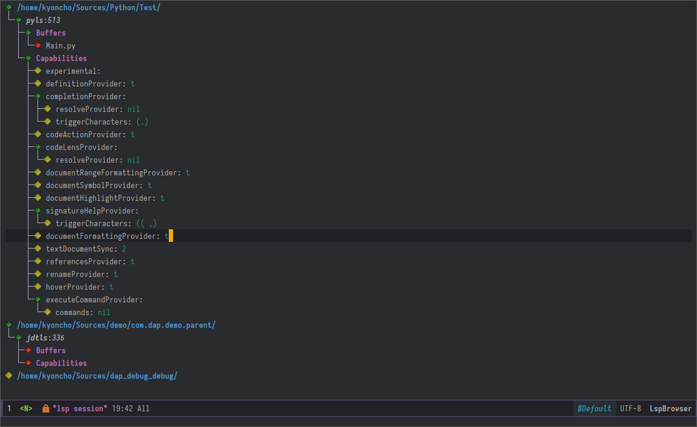

Language Server Protocol Support for Emacs#

Why?#
- ❤️ Community Driven
- 💎 Fully featured - supports all features in Language Server Protocol v3.14.
- 🚀 Fast - see performance section
- 🌟 Flexible - choose between full-blown IDE with flashy UI or minimal distraction free
- ⚙ Easy to configure - works out of the box and automatically upgrades if additional packages are present
Overview#
Client for Language Server
Protocol
(v3.14). lsp-mode aims to
provide IDE-like experience by providing optional integration with the
most popular Emacs packages like company, flycheck and projectile.
- Non-blocking asynchronous calls
- Real-time Diagnostics/linting via
flycheck (recommended) or
flymakewhen Emacs > 26 (requires flymake>=1.0.5) - Code completion -
company-capf/completion-at-point(note that company-lsp is no longer supported). - Hovers - using lsp-ui
- Code actions - using
lsp-execute-code-actionor lsp-ui sideline. - Code outline - using builtin
imenu
or
helm-imenu - Code navigation - using builtin xref, lsp-treemacs tree views or lsp-ui peek functions.
- Code lens
- Symbol highlights
- Formatting
- Debugger - dap-mode
- Helm integration - helm-lsp
- Ivy integration - lsp-ivy
- Treemacs integration - lsp-treemacs
- Semantic highlighting (as currently implemented by JDT LS and unreleased builds of clangd, cf. Semantic highlighting spec)
- which-key integration for better discovery
Presentations/demos#
- skybert's emacsconf presentation (Java)
- thatwist's ScalaUA Conference presentation (Scala)
Installation#
Install via melpa#
The recommended way to install lsp-mode is via package.el - the
built-in package manager in Emacs. lsp-mode is available on the two
major package.el community maintained repos - MELPA
Stable and MELPA.
M-x package-install [RET] lsp-mode [RET]
Configuration#
Install language server#
Check the table below with the list of supported servers and the corresponding instructions on how to install the server.
Configure lsp-mode#
-
Vanilla Emacs
You could go minimal and use
lsp-modeas it is without external packages with the built-inflymakeandcompletion-at-pointor you could install the following extensions for better experience:- install lsp-ui for fancy sideline, popup documentation, VScode-like peek UI, etc.
- install flycheck if you
prefer the more popular
flycheckover renewedflymake.lsp-modewill automatically pick it up. - install company-mode for completion popups.
- install lsp-treemacs for various tree based UI controls (symbols, errors overview, call hierarchy, etc.)
- install helm-lsp
provides on type completion alternative of
xref-aproposusinghelm. - install lsp-ivy provides
on type completion alternative of
xref-aproposusingivy. - install dap-mode if your language is supported by the debugger.
;; if you want to change prefix for lsp-mode keybindings. (setq lsp-keymap-prefix "s-l") (require 'lsp-mode) (add-hook 'XXX-mode-hook #'lsp)where
XXXcould be major mode likepython,java,c++. Alternatively, if you want to minimize you configuration you may useprog-mode-hook. In case you do that,lspwill try to start for each programming mode and echo a message when there is no client registered for the current mode or if the corresponding server is not present. In addition,lsp-modewill automatically detect and configure lsp-ui and company-lsp. To turn off that behavior you could setlsp-auto-configuretonil.To defer LSP server startup (and DidOpen notifications) until the buffer is visible you can use
lsp-deferredinstead oflsp:(add-hook 'XXX-mode-hook #'lsp-deferred) -
Spacemacs
lsp-mode is included in spacemacs develop branch. Add
lsptodotspacemacs-configuration-layersand configure the language that you want to use to be backed bylspbackend. -
use-package
Replace
(require 'lsp-mode)with the following if you use use-package.;; set prefix for lsp-command-keymap (few alternatives - "C-l", "C-c l") (setq lsp-keymap-prefix "s-l") (use-package lsp-mode :hook (;; replace XXX-mode with concrete major-mode(e. g. python-mode) (XXX-mode . lsp) ;; if you want which-key integration (lsp-mode . lsp-enable-which-key-integration)) :commands lsp) ;; optionally (use-package lsp-ui :commands lsp-ui-mode) ;; if you are helm user (use-package helm-lsp :commands helm-lsp-workspace-symbol) ;; if you are ivy user (use-package lsp-ivy :commands lsp-ivy-workspace-symbol) (use-package lsp-treemacs :commands lsp-treemacs-errors-list) ;; optionally if you want to use debugger (use-package dap-mode) ;; (use-package dap-LANGUAGE) to load the dap adapter for your language ;; optional if you want which-key integration (use-package which-key :config (which-key-mode))To defer LSP server startup (and DidOpen notifications) until the buffer is visible you can use
lsp-deferredinstead oflsp:(use-package lsp-mode :hook (XXX-mode . lsp-deferred) :commands (lsp lsp-deferred)) -
Recommended settings for lsp-mode related packages
-
company
(setq company-minimum-prefix-length 1 company-idle-delay 0.0) ;; default is 0.2
-
-
Formatting
In general the formatter settings are language server specific(e. g.
JDT LSuses eclipse formatter file andlsp-java-format-settings-urlto configure it while clangd usesclangd-format). The only settings that are controlled onlsp-modelevel are indent size and whether the server should use tabs or spaces.- Use
c-basic-offsetforcc-modederived moves(e. g. java, C++) to control the tab size. - Use
tab-widthfor any other mode to do the same. - Use
indent-tabs-modefor selecting tab/spaces.
- Use
-
Docker
Refer to lsp-docker README which provides a guide on how you can run
lsp-modeindockercontainer.
Performance#
Use M-x lsp-diagnose to validate if your lsp-mode is properly
configured. In the section below, you could find description for each of
the checks:
When configured properly lsp-mode's performance is on par with
mainstream LSP clients (e. g. VScode, Theia, etc). Here are steps to
achieve optimal results.
- Use Emacs 27+ with native json support. In order to validate that
you match this criteria do
M-: (functionp 'json-serialize) RET. Benchmarks show that Emacs 27 is~15 timesfaster than Emacs when using Elisp json parser implementation. -
Adjust
gc-cons-threshold. The default setting is too low forlsp-mode's needs due to the fact that client/server communication generates a lot of memory/garbage. You have two options:-
Set it to big number(100mb) like most of the popular starter kits like Spacemacs/Doom/Prelude, etc do:
(setq gc-cons-threshold 100000000) -
Follow the method recommended by Gnu Emacs Maintainer Eli Zaretskii: "My suggestion is to repeatedly multiply gc-cons-threshold by 2 until you stop seeing significant improvements in responsiveness, and in any case not to increase by a factor larger than 100 or somesuch. If even a 100-fold increase doesn't help, there's some deeper problem with the Lisp code which produces so much garbage, or maybe GC is not the reason for slowdown." Source: https://www.reddit.com/r/emacs/comments/brc05y/is_lspmode_too_slow_to_use_for_anyone_else/eofulix/
- Increase the amount of data which Emacs reads from the process. Again the emacs default is too low 4k considering that the some of the language server responses are in 800k - 3M range.
-
(setq read-process-output-max (* 1024 1024)) ;; 1mb
- Optional: use
company-capf. Althoughcompany-lspalso supports cachinglsp-mode'scompany-capfdoes that by default. To achieve that uninstallcompany-lspor put these lines in your config:
(setq lsp-prefer-capf t)
Note: - to verify which company backend implementation you are using
do M-x company-diag when performing auto-completion.
- Optional: Disable
lsp-ui. Normally,lsp-uiis very fast but in some systems (especially when usingWindows)lsp-uioverlays and popups might slow down emacs. - Optional: fine-tune
lsp-idle-delay. This variable determines how often lsp-mode will refresh the highlights, lenses, links, etc while you type.
(setq lsp-idle-delay 0.500)
-
Reporting performance problems
If you have tried all of the non-optional steps from the list and
emacsis still not very responsive please open a PR with the following information:- Collect lsp-log data after setting
lsp-print-performancetot.
(setq lsp-print-performance t)- Include emacs performance report. Use the following step to
collect it:
M-x profiler-startand selectCPU- Reproduce the slow behavior.
M-x profiler-stop- In the profiler report expand all nodes by doing
C-u TAB. Note: -lsp-modeis just a frontend and the performance depends on server as well. Some servers (e. g. Palantir's Python Language Server) might be slow when performing auto-completion.
- Collect lsp-log data after setting
How does it work?#
lsp-mode has predefined list of server configurations (loaded in
lsp-clients.el) containing a mapping from major-mode to the server
configuration or by using activation function. In addition to the
default server configuration located in lsp-clients.el there are few
languages servers which require separate package(check Supported
languages). When you open a file from a
particular project lsp-mode and call lsp command lsp-mode will
look for server registrations able to handle current file. If there is
such client lsp-mode will look for the project root. If you open a
file from the project for the first time you will be prompted to define
the current project root. Once the project root is selected it is saved
in lsp-session file and it will be loaded the next time you start
Emacs so you no longer will be asked for a project root when you open a
file from that project. Later if you want to change the project root you
may use lsp-workspace-folder-remove to remove the project and call
lsp-workspace-folder-add to add the root. If you want to force
starting a particular language server in a file you may use C-u M-x
lsp which will prompt you to select language server to start.
Supported languages#
Some of the servers are directly supported by lsp-mode by requiring
lsp-clients.el while others require installing additional packages
which provide server specific functionality.
| Language | Language Server | Built-in | Installation command | Debugger |
|---|---|---|---|---|
| Ada | adalanguageserver | Yes | Installation instructions | Yes (gdb) |
| Angular | vscode-ng-language-service | Yes | Installation instructions | Not relevant |
| Bash | bash-language-server | Yes | npm i -g bash-language-server | |
| C++ | ccls | emacs-ccls | ccls | Yes (gdb or lldb) |
| C++ | clangd | Yes | clangd | Yes (gdb or lldb) |
| C++ | cquery | emacs-cquery | cquery | Yes (gdb or lldb) |
| C# | OmniSharp-Roslyn | Yes | OmniSharp-Roslyn | No |
| Clojure | clojure-lsp | Yes | clojure-lsp | |
| CMake | cmake-language-server | Yes | pip install cmake-language-server |
Not relevant |
| Crystal | scry | Yes | scry | |
| CSS/LessCSS/SASS/SCSS | css | Yes | npm install -g vscode-css-languageserver-bin | |
| Dart | dartanalysisserver | lsp-dart | built into dart-sdk | Yes |
| Dhall | dhall-lsp-server | Yes | Installation instructions | No |
| Dockerfile | dockerfile-language-server-nodejs | Yes | npm install -g dockerfile-language-server-nodejs | |
| Elixir | elixir-lsp/elixir-ls | Yes | elixir-lsp/elixir-ls | Yes |
| Elixir | elixir-ls | Yes | elixir-ls | Yes |
| Elm | elmLS | Yes | npm i -g @elm-tooling/elm-language-server, or clone the repository and follow installation instructions | No |
| Erlang | erlangls | Yes | erlangls | |
| Eslint | eslint | Yes | LSP ESLint Guide | N/A |
| F# | fsautocomplete | Yes | Automatic by lsp-fsharp | No |
| Fortran | fortran-language-server | Yes | pip install fortran-language-server | Yes |
| Go | gopls | Yes | go get golang.org/x/tools/gopls@latest docs |
Yes |
| Go | bingo | Yes | bingo | Yes |
| Groovy | groovy-language-server | Yes | groovy-language-server | |
| Hack | hhvm | Yes | hhvm | |
| HTML | html | Yes | npm install -g vscode-html-languageserver-bin | |
| Haskell | IDE engine | lsp-haskell | IDE engine | |
| Lua | EmmyLua | Yes | Installation | |
| Java | Eclipse JDT LS | lsp-java | Automatic by lsp-java | Yes |
| JavaScript/TypeScript | typescript-language-server (recommended) | Yes | npm i -g typescript-language-server; npm i -g typescript | Yes (Firefox/Chrome) |
| JavaScript/TypeScript | javascript-typescript-stdio | Yes | npm i -g javascript-typescript-langserver | Yes (Firefox/Chrome) |
| JavaScript Flow | flow (add-on if working on a Flow file) | Yes | flow | Yes (Firefox/Chrome) |
| Json | vscode-json-languageserver | Yes | Automatic or manual by npm i -g vscode-json-languageserver |
|
| Julia | lsp-julia | lsp-julia | LanguageServer.jl | |
| Kotlin | kotlin-language-server | Yes | kotlin-language-server | |
| Nim | nimlsp | Yes | nimble install nimlsp |
No |
| OCaml | ocaml-language-server | Yes | ocaml-language-server | |
| OCaml | ocaml-lsp-server | Yes | ocaml-lsp-server | |
| Pascal/Object Pascal | pascal-language-server | lsp-pascal | pascal-language-server | No |
| Perl | Perl::LanguageServer | Yes | cpanm Perl::LanguageServer | |
| PHP(recommended) | intelephense | Yes | npm i intelephense -g | Yes |
| PHP | php-language-server | Yes | php-language-server | Yes |
| Powershell | PowerShellEditorServices | Yes | Automatic | Yes |
| PureScript | purescript-language-server | Yes | npm i purescript-language-server | No |
| Python | pyls | Yes | pip install 'python-language-server[all]' | Yes |
| Python(Microsoft) | Microsoft Python Language Server | lsp-python-ms | lsp-python-ms | Yes |
| R | languageserver | Yes | install.packages("languageserver") | No |
| Ruby | solargraph | Yes | gem install solargraph | Yes |
| Rust | rls | Yes | rls | Yes |
| Rust | rust-analyzer | Yes | rust-analyzer | |
| Scala | Metals | Yes | Metals | |
| Swift | sourcekit-LSP | lsp-sourcekit | sourcekit-LSP | Yes (via llvm debug adapter) |
| Terraform | terraform-lsp | No | Git clone outside of $GOPATH; go install. (Requires go > 1.11) |
No |
| TeX, LaTeX, etc. | Digestif | Yes | luarocks \-\-server http://luarocks.org/dev install digestif | |
| TeX, LaTeX, etc. | texlab | Yes | cargo install –git https://github.com/latex-lsp/texlab.git | |
| TeX, LaTeX, etc. | texlab | lsp-latex | cargo install –git https://github.com/latex-lsp/texlab.git | |
| Verilog/SystemVerilog | hdlchecker | Yes | pip install hdl-checker –upgrade | No |
| VHDL | VHDL Tool | Yes | Download from http://www.vhdltool.com/download | No |
| Vimscript | vim-language-server | Yes | npm install -g vim-language-server | n/a |
| Vue | vue-language-server | Yes | npm install -g vls | Yes (Firefox/Chrome) |
| XML | lsp4xml | Yes | Download from lsp4xml releases | |
| YAML | yaml | Yes | npm install -g yaml-language-server |
Commands#
When using lsp-mode most of the features depend on server
capabilities. lsp-mode provides default bindings which are dynamically
enabled/disabled based on the server functionality. All the commands are
configured lsp-command-map which is bound to lsp-keymap-prefix
(default s-l).
| Keybinding | Description |
|---|---|
s-l s s |
Entry point for the server startup. |
s-l s r |
Restart language server |
s-l s q |
Shutdown language server |
s-l s d |
Describes current session |
s-l s D |
Disconnect the buffer from the language server keeping the server running. |
s-l = = |
Ask the server to format this document. |
s-l = r |
Ask the server to format the region, or if none is selected, the current line. |
s-l F a |
Add new project root to the list of workspace folders. |
s-l F r |
Remove project root from the list of workspace folders. |
s-l F b |
Remove project root from the workspace blacklist. |
s-l T l |
Toggle code-lens overlays. |
s-l T L |
Toggle client-server protocol logging. |
s-l T h |
Toggle symbol highlighting. |
s-l T S |
Toggle minor mode for showing information for current line in sideline. (requires lsp-ui) |
s-l T d |
Toggle minor mode for showing hover information in child frame. (requires lsp-ui) |
s-l T s |
Toggle signature auto activate. |
s-l T f |
Toggle on type formatting. |
s-l T T |
Toggle global minor mode for synchronizing lsp-mode workspace folders and treemacs projects. (requires lsp-treemacs) |
s-l g g |
Find definitions of the symbol under point. |
s-l g r |
Find references of the symbol under point. |
s-l g i |
Find implementations of the symbol under point. |
s-l g t |
Find type definitions of the symbol under point. |
s-l g d |
Find declarations of the symbol under point. |
s-l g h |
Show the incoming call hierarchy for the symbol at point. (requires lsp-treemacs) |
s-l g a |
Find all meaningful symbols that match pattern. |
s-l h h |
Display the type signature and documentation of the thing at |
s-l h s |
Activate signature help. |
s-l h g |
Trigger display hover information popup and hide it on next typing. |
s-l r r |
Rename the symbol (and all references to it). |
s-l r o |
Perform the source.organizeImports code action, if available. |
s-l a a |
Execute code action. |
s-l a l |
Click lsp lens using ‘avy’ package. |
s-l a h |
Highlight symbol at point. |
s-l G g |
Peek definitions to the identifier at point. (requires lsp-ui) |
s-l G r |
Peek references to the identifier at point. (requires lsp-ui) |
s-l G i |
Peek implementation locations of the symbol at point. (requires lsp-ui) |
s-l G s |
Peek symbols in the worskpace. (requires lsp-ui) |
which-key integration#
To enable which-key
integration in the active major mode for lsp-mode-map you will need to
call the lsp-enable-which-key-integration function. This could be done
when lsp-mode starts with the following:
(with-eval-after-load 'lsp-mode
(add-hook 'lsp-mode-hook #'lsp-enable-which-key-integration))
You can also enable which-key integration for all major modes by passing
t as a parameter. This is useful for buffers that can use multiple
major modes like those using vue-mode.

Modeline errors#
To see all error statistics in the modeline you can enable
lsp-diagnostics-modeline-mode. This is especially useful for languages
that compilation might be broken due to errors in other files(e. g.
Java/Haskell).
(with-eval-after-load 'lsp-mode
;; :project/:workspace/:file
(setq lsp-diagnostics-modeline-scope :project)
(add-hook 'lsp-managed-mode-hook 'lsp-diagnostics-modeline-mode))
/lsp-treemacs-errors-list.
Settings#
lsp-log-io- If non-nil, print all messages to and from the language server to*lsp-log*.lsp-print-performance- If non-nil, print performance info. to*lsp-log*.lsp-inhibit-message- If non-nil, inhibit the message echo viainhibit-message.lsp-report-if-no-buffer- If non nil the errors will be reported even when the file is not open.lsp-keep-workspace-alive- If non nil keep workspace alive when the last workspace buffer is closed.lsp-enable-snippet- Enable/disable snippet completion support.lsp-auto-guess-root- Automatically guess the project root using projectile/project. Do not use this setting unless you are familiar withlsp-modeinternals and you are sure that all of your projects are followingprojectile=/=project.elconventions.lsp-restart- Defines how server exited event must be handled.lsp-session-file- File where session information is stored.lsp-auto-configure- Auto configurelsp-mode. When set to tlsp-modewill auto-configurelsp-uiandcompany-lsp.lsp-document-sync-method- How to sync the document with the language server.lsp-auto-execute-action- Auto-execute single action.lsp-eldoc-render-all- Display all of the info returned bydocument/onHover. If this is nil,eldocwill show only the symbol information.lsp-enable-completion-at-point- Enablecompletion-at-pointintegration.lsp-enable-xref- Enable xref integration.lsp-diagnostic-package- Specifies which package to use for diagnostics. Choose from:auto,:flycheck,:flymakeand:none. Default is:autowhich means use:flycheckif present.lsp-enable-indentation- Indent regions using the file formatting functionality provided by the language server.lsp-enable-on-type-formatting- EnabletextDocument/onTypeFormattingintegration.lsp-before-save-edits- If non-nil,lsp-modewill apply edits suggested by the language server before saving a document.lsp-imenu-show-container-name- Display the symbol's container name in an imenu entry.lsp-imenu-container-name-separator- Separator string to use to separate the container name from the symbol while displaying imenu entries.lsp-imenu-sort-methods- How to sort the imenu items. The value is a list ofkind,nameorposition. Priorities are determined by the index of the element.lsp-response-timeout- Number of seconds to wait for a response from the language server before timing out.lsp-enable-file-watchers- If non-nil lsp-mode will watch the files in the workspace if the server has requested that.lsp-server-trace- Request trace mode on the language server.lsp-semantic-highlighting- Enable experimental semantic highlighting supportlsp-enable-imenu- If non-nil, automatically enable imenu integration when server providestextDocument/documentSymbol.lsp-signature-auto-activate- Auto activate signature when trigger char is pressed.lsp-signature-render-documentation- Include signature documentation in signature help.lsp-enable-text-document-color- EnabletextDocument/documentColorwhen server supports it.
Extensions#
TRAMP#
LSP mode has support for tramp buffers with the following requirements:
- The language server has to be present on the remote server.
- Having multi folder language server (like Eclipse JDT LS) cannot have local and remote workspace folders.
-
How does it work?
lsp-modedetects whether a particular file is located on remote machine and looks for a client which matches current file and it is marked as:remote?t. Thenlsp-modestarts the client through tramp. -
Sample configuration
Here it is example how you can configure python language server to work when using
TRAMP. Note that if you are trying to convert existing language server configuration you should copy all of it's properties(e. g.:request-handlers,activation-fn, etc).(lsp-register-client (make-lsp-client :new-connection (lsp-tramp-connection "<insert your LS's binary name or path here>") :major-modes '(python-mode) :remote? t :server-id 'pyls-remote)) -
Dealing with stderr
With TRAMP, Emacs does not have an easy way to distinguish stdout and stderr, so when the underlying LSP process writes to stderr, it breaks the
lsp-modeparser. As a workaround,lsp-modeis redirecting stderr to/tmp/<process-name>-<id>~stderr.
Limitations#
File watches#
When some of the workspaces that are active in the current project
requests file notifications via workspace/didChangeWatchedFiles
lsp-mode will start monitoring each of the folders in the workspace
for changes. In case your project contains a lot of files you might want
to disable file monitoring via lsp-enable-file-watchers (you may use
dir-locals).
Contributions#
Contributions are very much welcome.
Members#
Here it is a list of the current lsp-mode members and what they are
primary working on/responsible for.
| Member | Responsible for: |
|---|---|
| TOTBWF | F# |
| brotzeit | Rust |
| dsyzling | Scala |
| kurnevsky | Scala & Rust |
| seagle0128 | Go & MS Python Language Server |
| sebastiansturm | lsp-mode core & C++ |
| vibhavp | lsp-mode core |
| yyoncho | lsp-mode core & Java |
| ericdallo | Dart & Flutter |
Troubleshooting#
- check
*lsp-log*buffer and verify thatlsp-modeis able to find the server. Iflsp-modeis unable to find the binary but it is on the path it is probably caused by the fact that emacs is running with different path. You may check the current path by executingM-: (getenv "PATH"). If this is the case, you have several options to fix the issue.- make sure that emacs is using the proper path by running emacs from terminal
- Modify the path using
setpath - Look for
lsp-modevariable to customize server path. Usually, you may find the variable by doingM-x customize-group RET lsp-LANGUAGE-SERVER-ID.
- set
lsp-log-iototto inspect communication between client and the server. Uselsp-workspace-show-logto switch to the corresponding log buffer. lsp-describe-sessionwill show the current projects roots + the started severs and allows inspecting the server capabilities.

Adding support for languages#
Registering server#
Here it is the minimal configuration that is needed for new language
server registration. Refer to the documentation of lsp-client.el for
the additional settings supported on registration time.
lsp-language-id-configuration must be updated to contain the
corresponding mode -> language id - in this case (python-mode .
"python")
(defvar lsp-language-id-configuration
'(...
(python-mode . "python")
...))
;; if you are adding the support for your language server in separate repo use
;; (add-to-list 'lsp-language-id-configuration '(python-mode . "python"))
(lsp-register-client
(make-lsp-client :new-connection (lsp-stdio-connection "pyls")
:major-modes '(python-mode)
:server-id 'pyls))
If the language server supports environment variables to control
additional behavior, you can register that by using the
:environment-fn function, like the Bash language client does:
(lsp-register-client
(make-lsp-client :new-connection (lsp-stdio-connection '("bash-language-server" "start"))
:major-modes '(sh-mode)
:priority -1
:environment-fn (lambda ()
(("EXPLAINSHELL_ENDPOINT" . lsp-bash-explainshell-endpoint)
("HIGHLIGHT_PARSING_ERRORS" . lsp-bash-highlight-parsing-errors)))
:server-id 'bash-ls))
lsp-bash-explainshell-endpoint and lsp-bash-highlight-parsing-errors
are language client defcustom that expose supported server environment
settings in a type-safe way. If you change any of those variables,
restart the language server with lsp-restart-workspace for the changes
to be applied.
Sections#
lsp-mode provides tools to bridge emacs defcustom as a language
configuration sections properties(see specification
workspace/configuration).
In addition you may use lsp-generate-settings from Generate Settings
script
to generate defcustom from package.json VScode plugin manifest.
Example:
(defcustom lsp-foo-language-server-property "bar"
"Demo property."
:group 'foo-ls
:risky t)
(lsp-register-custom-settings '(("foo.section.property" lsp-foo-language-server-property)))
(lsp-configuration-section "foo")
;; => (("foo" ("settings" ("property" . "bar"))))
FAQ#
- How do I troubleshoot "Server FOO-LS:pid exited with status signal.
Do you want to restart it? (y or n)"?
- This message indicates that the language server has crashed for
some reason. You may check the server stderr which is
*FOO-LS::stderr*. If you get this message on startup you may try to run the exact command thatlsp-modeis running in the terminal. You may find it in*lsp-log*buffer.
- This message indicates that the language server has crashed for
some reason. You may check the server stderr which is
- How to configure a server with local variables?
-
Add
lspserver call tohack-local-variables-hookwhich runs right after the local variables are loaded.- I have multiple language servers registered for language FOO. Which one will be used when opening a project? - The one with highest priority wins.(add-hook 'hack-local-variables-hook (lambda () (when (derived-mode-p 'XXX-mode) (lsp))))lsp-clients.elpredefined servers have priority -1, lower than external packages (priority 0 if unspecified). If a server is registered with:add-on?flag set totit will be started in parallel to the other servers that are registered for the current mode. - I have multiple language servers for languageFOOand I want to select the server per project, what can I do? - You may createdir-localfor each of the projects and specify list oflsp-enabled-clients. This will narrow the list of the clients that are going to be tested for the project. - The completion does not work fine and inserts arguments and placeholders, what I am doing wrong? - make sure you have installedyasnippetand you haveyasnippetminor mode enabled. - I am getting "Package ‘spinner-1.7.3’ is unavailable" when trying to installlsp-mode. - This is caused by GPG keys used by the ELPA package manager not being up to date. You may fix by installing: gnu-elpa-keyring-update - The flycheck does not work intypescript,htmlandjavascriptblocks invue-mode. How to fix that? - This is caused by the fact thatvue-modeuses multiple major modes in single file and thelsp-uichecker may not associated with the major mode at point. You could fix that by adding the following lines to your config.- I have disabled snippets and(with-eval-after-load 'lsp-mode (mapc #'lsp-flycheck-add-mode '(typescript-mode js-mode css-mode vue-html-mode)))Rust Analyzerserver inserts redundant$0when performing completion? -Rust Analyzerdoes not support disabling snippets - see https://github.com/rust-analyzer/rust-analyzer/issues/2518
-
Changelog#
The changelog can be found here.
See also#
- lsp-docker - provide docker image with preconfigured language servers with corresponding emacs configuration.
- company-box -
companyfrontend with icons. - dap-mode - Debugger
integration for
lsp-mode. - eglot - An alternative minimal LSP implementation.
- which-key - Emacs package that displays available keybindings in popup
- projectile - Project Interaction Library for Emacs